1.1 Introduction
Grasshopper supports multiple scripting languages such as C#, Python, and VB.NET to help develop custom components using the Rhino and Grasshopper SDKs (software development kit). Rhino publishes a cross-platform SDK for .NET languages called RhinoCommon. The documentation of the SDK and other developer resources are available at Rhino Developer Documentation.
1.2 C# Component Interface
The scripting components are integrated within Grasshopper and have a similar interface to that of other typical components. They can read input & produce output, and they have an editor to write custom code with access to RhinoCommon. They are used to create specialized code and workflows not supported by other Grasshopper components. You can also use them to simplify, optimize, and streamline your definitions by combining multiple functions.
To add an instance of the C# script component to the canvas, drag & drop the component from the Script panel under the Maths tab. The default script component has two inputs and two outputs. The user can change the names of input and output, set the input data type and data structure, and also add more inputs and outputs parameters or remove them. We will explain how to do all that shortly.
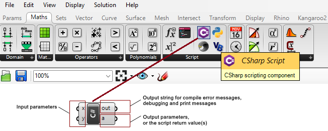
Alternatively, you can use the generic Script component, then click on the C# at the margin.
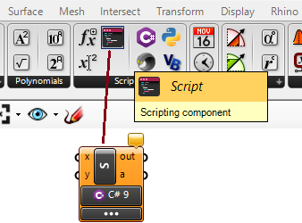
1.3 The Input Parameters
By default, there are two input parameters named x and y. It is possible to edit the parameters’ names, delete them or add new ones. If you zoom in, you will notice a few “+” and “-” signs appearing. You can click on those to add or remove parameters. You can also right-click on a parameter to change its name. Note that the names of the parameters and their types are passed to the main function inside the script component, which is called RunScript. It is a good practice to set the input and output parameter names to reflect what each parameter does. Parameter names should not use spaces or special characters.
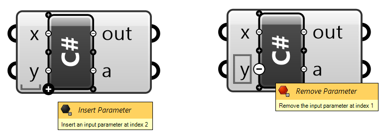
If you right-click on an input parameter, you will see a menu that has four parts as detailed in Figure 4 below.
drop_menu.png
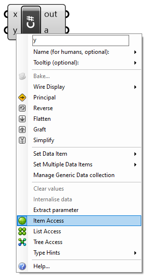
The input parts are:
- Name: You can click on it and type a new parameter name. Also, you have the option to set a description of the parameter and the toolt**ip.
- General attributes: common to most other GH components
- Data access: to indicate whether the input should be accessed as a single item, a list of items, or as a tree. Note: We will explain how to traverse and navigate data access options in some detail later in this chapter.
- Type: Input parameters are set by default to be of an object type. It is best to specify a type to make the code more readable and efficient. Types can be primitive, such as int or double, or RhinoCommon types that are used only in Rhino such as Point3d or Curve. You need to set the type for each input.
- Help: full description of the scripting component
Just like all other GH components, you can hook data to the input parameters of the script components. Your script component can process most data types. You can specify the data type of your input using the Type hint as in the following image.
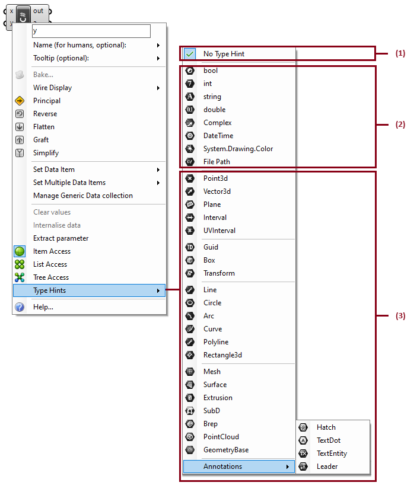
The Type hint, gives access to many data types and can be divided into three groups:
- No Type Hint. if you do not specify the input type, GH assigns the base type System.Object. The System.Object is the root type that all other types are built on. Therefore, it is safe to assign System.Object type to any data type.
- Primitive types. Those are made available by the .NET framework.
- RhinoCommon types. Those are defined in the RhinoCommon SDK.
1.4 The Output Parameters
Just like with input parameters, you can add or remove output parameters by zooming in, then use the “+” or “-” signs. You can also change the name of the output. However, there is no data access or data types that you can set. They are always defined as System.Object, and hence you can assign any type, and as defined by your script and GH, take care of parsing it to use downstream.
1.5 The Out String
The out string is used to list errors and other useful information about your code. You can connect the out to a Panel component to be able to read the information.
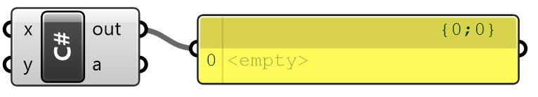
There are two types of messages that print to the out string.
- Compile-time messages. These include compiler errors and warnings about your code. This is very helpful information to point you to the lines in your code that the compiler is complaining about, so that you can correct the error(s).
- Runtime messages. You can print any text to the out string to track information generated inside your code during execution.
1.6 Main Menu
You can access the main component menu by hovering over the middle of the scripting component (black label) and right-clicking. Most of the functions are similar to other GH components, but there are a couple specialized functions such as Open Script Editor… to open the code editor and Manage Assemblies to help add external libraries to access in your script.
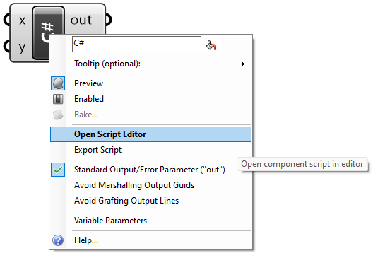
1.7 Code Editor
To show the code editor window for the C# script component, you need to double-click in the middle of the component (or right-click the middle and select Open Script Editor…). The code editor supports debugging. For a full explanation of the editor interface and functionality, please visit the Grasshopper Script Editor for C# guide.
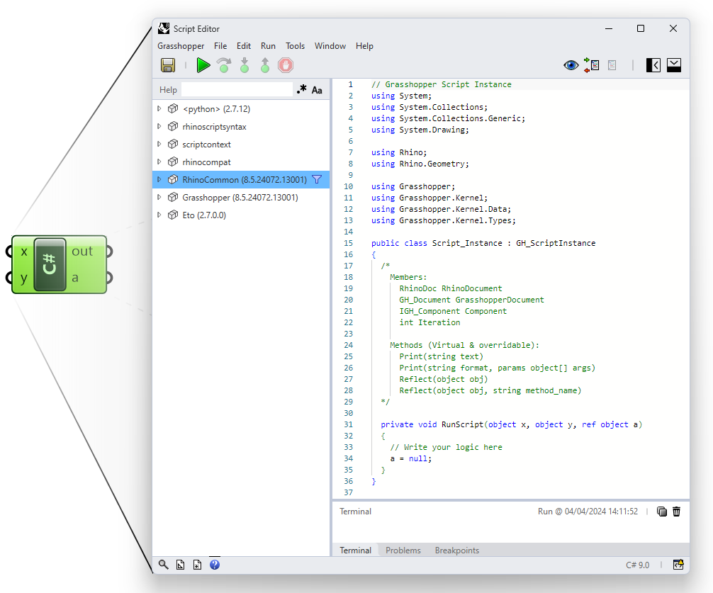
The code window of the C# scripting component has a few distinct sections as in Figure 10. Next, we will expand and explain each of the parts.
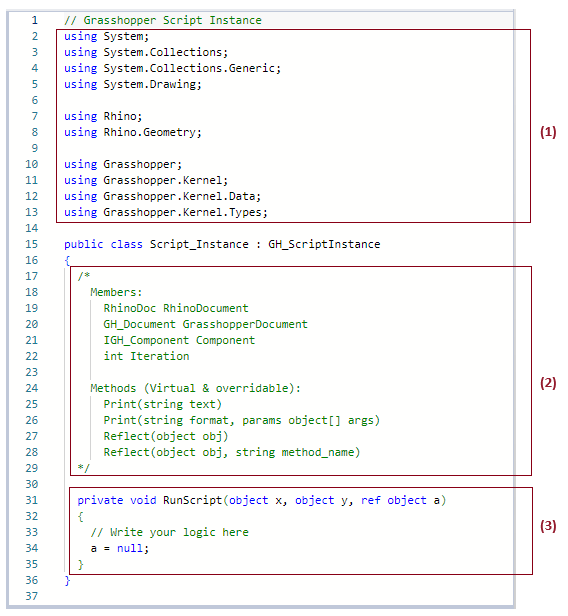
1.7.1 Imports
There are assemblies that you can access and use in your code. Most of them are the .NET system ones, but there are also the Rhino and Grasshopper assemblies that give access to the Rhino geometry classes and the Grasshopper types and functions. You can also add your custom libraries or external assemblies in this section.
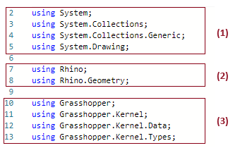
1.7.2 Utility Members & Functions
The members are useful variables that can be utilized in your code. Members include a one-and-only instance to the active Rhino document, an instance to the Grasshopper document, the current GH scripting component, and finally the iteration variable, which references the number of times the script component is called (usually based on the input and data access). For example, when your input parameters are single items, then the script component runs only once, but if you input a list of values, say 10 of them, then the component is executed 10 times (that is assuming that the data access is set to a single item). You can use the Iteration variable if you would like your code to do different things at different iterations or to simply analyze how many times the component is called.
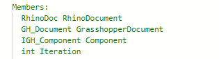
You can use the methods to help debug and communicate useful information. The Print() functions to send strings to the out output parameter. You can use the Reflect() functions to gain information regarding classes and their methods. For example, if you wish to get more information about the data that is available through the input parameter x, you can add Reflect(x) to your code. As a result, a string with type method information will be written to the out parameter.
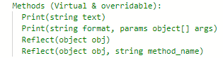
1.7.3 The RunScript
This is the main function where you write your code. The signature of the RunScript includes the input and output parameters along with their data types and names. There is a space between the open and closed parentheses to indicate the region where you can type your code.
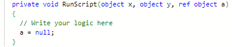
1.8 Data Access
This topic requires knowledge in C# programming. If you need to review or refresh your knowledge in C# programming, please review Chapter 2 before reading this section.
Grasshopper scripting components, just like all other GH components, can process three types of data access; item access, list access, and tree access.
| Icons in GH | Data Access |
|---|---|
| Item Access | |
| List Access | |
| Tree Access |
You need to right-click on the input parameter to set its data access, otherwise it is set to item access by default. We will explain what each access means and how data is processed inside the component in each case.
1.8.1 Item Access
Item access means that the input is processed one item at a time. Suppose you have a list of numbers that you need to test if they are odd or even. To simplify your code, you can choose to only process one number at a time. In this case, item access is appropriate to use. So even if the input to num is a list of integers, the scripting component will process one integer at a time and run the script a number of times equal to the length of the list.
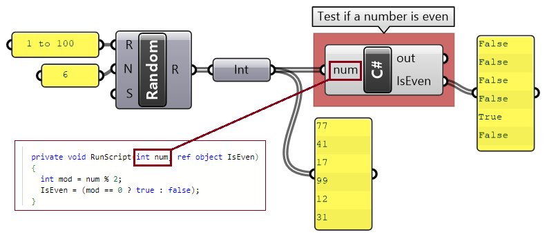
private void RunScript( int num, ref object IsEven )
{
int mod = num % 2;
IsEven = (mod == 0 ? true : false);
}
With item access, each element in a list is processed independently from the rest of the elements. For example, if you have a list of 6 numbers {1, 2, 3, 4, 5, 6} and you would like to increment each one of them by some number — let’s say 10 — to get the list {11, 12, 13, 14, 15, 16}, then you can set the data access to item access. The script will run 6 times, once for each element in the list, and the output will be a list of 6 numbers. Notice in the following implementation in GH where x is input as a single item of type double.
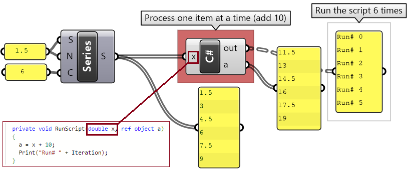
private void RunScript( double x, ref object a )
{
A = x + 10;
Print("Run# " + Iteration);
}
1.8.2 List Access
List access means the whole list is processed all in one call to the scripting component. In the previous example, we can change the data access from item access to list access and change the script to add 10 to each one of the items in the list as in the following. Note that the script runs only once.
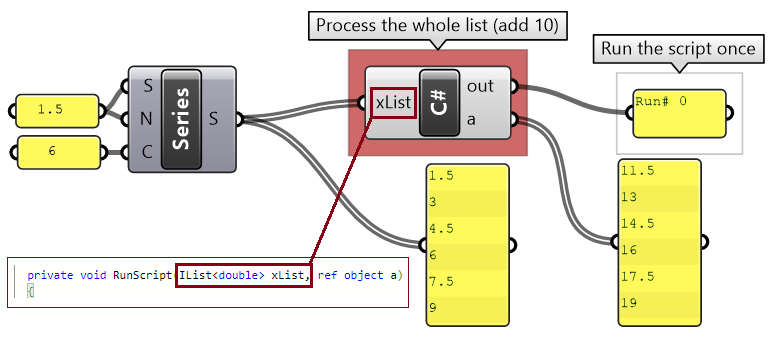
private void RunScript( List<double> xList, ref object a )
{
List<double> newList = new List<double>();
foreach( var x in xList)
newList.Add(x + 10);
Print("Run# " + Iteration);
A = newList;
}
The list access is most useful when you need to process the whole list in order to find the result. For example, to calculate the sum of a list of input numbers, you need to access the whole list. Remember to set the data access to list access.
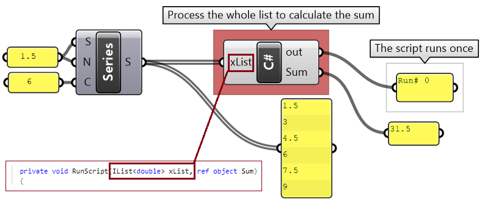
private void RunScript( List<double> xList, ref object Sum)
{
double xSum = 0;
foreach( var x in xList)
xSum = xSum + x;
Print("Run# " + Iteration);
Sum = xSum;
}
1.8.3 Tree Access
Tree data access in Grasshopper is an advanced topic. You might not need to deal with trees, but if you encounter them in your code, then this section will help you understand how they work and how to do some basic operations with them.
Trees (or multi-dimensional data) can be processed one element at a time, one branch (path) at a time, or all branches at the same time. That will depend on how you set the data access (item, list, or tree). For example, if you divide two curves into two segments each, then we get a tree structure that has two branches (or paths), each with three points. Now, suppose you want to write a script to place a sphere around each point. The code will be different based on how you set the data access. If you make it item access, then the script will run 6 times (once for each point), but the tree data structure will be maintained in the output with two branches and three spheres in each branch. Your code will be simple because it deals with one point at a time.
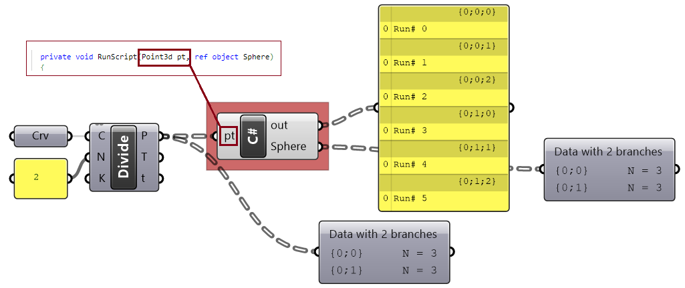
private void RunScript( Point3d pt, ref object Sphere)
{
Sphere ptSphere = new Sphere(x, 0.5);
Print("Run# " + Iteration);
Sphere = ptSphere;
}
The same result can be achieved with the list access, but this time, your code will have to process each branch as a list. The script runs 2 times, once for each branch.
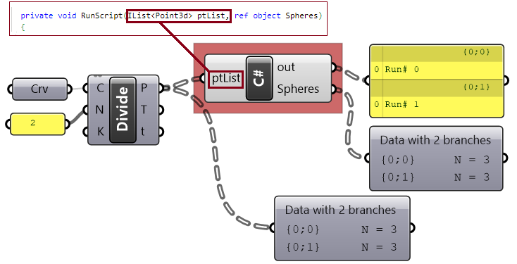
private void RunScript( List<Point3d> ptList, ref object Spheres)
{
List<Sphere> sphereList = new List<Sphere>();
foreach (Point3d pt in ptList) {
Sphere sphere = new Sphere(pt, 0.5);
sphereList.Add(sphere);
}
Print("Run# " + Iteration);
Spheres = sphereList;
}
The tree access allows you to process the whole tree, and your code will run only once. While this might be necessary in some cases, it also complicates your code.
private void RunScript( List<Point3d> ptList, ref object Spheres)
{
List<Sphere> sphereList = new List<Sphere>();
foreach (Point3d pt in ptList) {
Sphere sphere = new Sphere(pt, 0.5);
sphereList.Add(sphere);
}
Print("Run# " + Iteration);
Spheres = sphereList;
}
The tree access allows you to process the whole tree, and your code will run only once. While this might be necessary in some cases, it also complicates your code.
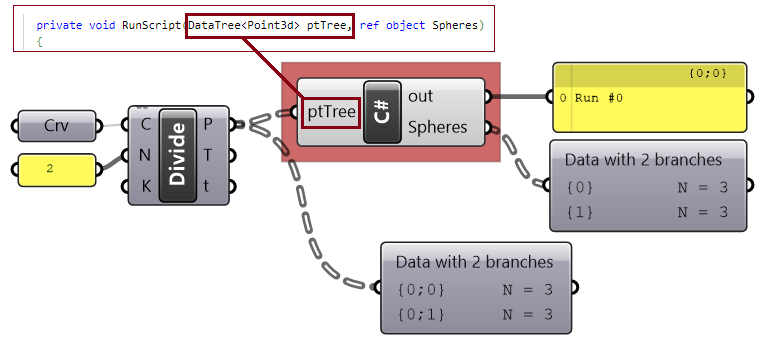
private void RunScript( DataTree<Point3d> ptTree, ref object Spheres)
{
//Declare a tree of spheres
DataTree<Sphere> sphereTree = new DataTree<Sphere>();
int pathIndex = 0;
foreach (List<Point3d> branch in ptTree.Branches) {
List<Sphere> sphereList = new List<Sphere>();
GH_Path path = new GH_Path(pathIndex);
pathIndex = pathIndex + 1;
foreach (Point3d pt in branch)
{
Sphere sphere = new Sphere(pt, 0.5);
sphereList.Add(sphere);
}
sphereTree.AddRange(sphereList, path);
}
Print("Run# " + Iteration);
Spheres = sphereTree;
}
The tree data structure is a special data type that is unique to Grasshopper. If you need to generate a tree inside your script, then the following shows how to do just that. For more details about Grasshopper data structures, please refer to the Essential Algorithms & Data Structures for Grasshopper.
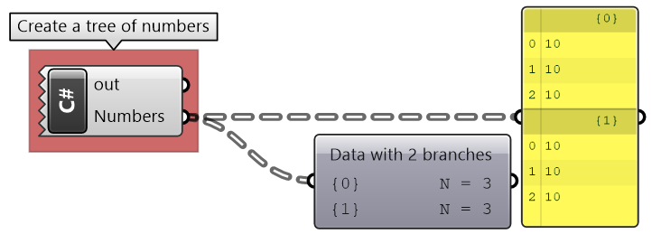
private void RunScript( ref object Numbers)
{
DataTree<double> numTree = new DataTree<double>();
int pathIndex = 0;
for (int b = 0; b <= 1; b++) {
List<double> numList = new List<double>();
GH_Path path = new GH_Path(pathIndex);
pathIndex = pathIndex + 1;
for (int i = 0; i <= 2; i++) {
numList.Add(10);
}
numTree.AddRange(numList, path);
}
Numbers = numTree;
}
The following example shows how to step through a given data tree of numbers to calculate the overall sum:
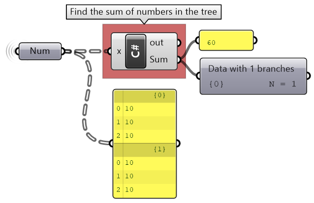
private void RunScript( DataTree<double> x, ref object Sum)
{
double xSum = 0;
foreach (List<double> branch in x.Branches){
foreach (double num in branch) {
xSum = xSum + num;
}
}
Sum = xSum;
}
Next Steps
Those are the basics of C# data structures. Next, learn the Chapter 2: C# Programming Basics.
This is part 1 of the Essential C# Scripting for Grasshopper guide.